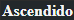

|  |
|---|
O jovem não era muito alto, mas sua constituição esbelta e suas roupas elegantes o deixavam muito charmoso. Com sua pele de porcelana e cabelos negros, ele parecia uma boneca requintada. Seus impressionantes olhos escuros pareciam brilhar com um humor bem-humorado.
Ao mesmo tempo, havia algo de frio neles que fazia tremer aqueles que olhavam para o jovem por muito tempo.
Era como se as sombras se tornassem um pouco mais profundas ao redor dele.
| Primeiro Pesadelo | Segundo Pesadelo |
|---|
"Uma sombra solitária chegou a uma terra de sonhos despedaçados. Ela foi capturada e jogada em uma jaula, mas escapou ao tecer feitiços a partir de sua própria alma. A sombra se decapitou para tirar a coleira de escravo do pescoço e perdeu o coração para conquistar a liberdade.
Deixando o coliseu para trás, a sombra viajou para longe e foi enredada. Viveu cem vidas e morreu cem mortes em um terrível pesadelo, esquecendo-se do que era e de onde veio. A sombra não se desfez e, por isso, o pesadelo se desfez.
Mais uma vez livre, a sombra fez amizade com um feiticeiro louco, uma criança selvagem, um arqueiro aleijado e um profeta cego. Juntos, eles coletaram as mortes dos lordes imortais e travaram uma guerra contra a cidade sagrada.
Os lordes foram mortos, a cidade foi destruída.
A sombra quebrou as correntes de Hope e libertou Desire".
- Avaliação pelo Feitiço, Capítulo 743 Avaliação
Depois que o Segundo Pesadelo terminou, sua avaliação final pelo Feitiço foi "Excelente". Um de seus Atributos, [Criança das Sombras], evoluiu para [Mestre das Sombras] e uma de suas Habilidades de Aspecto, [Controle das Sombras], evoluiu durante sua ascensão.